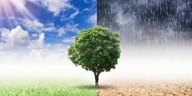

CONCIENCIA PARA TOMAR SOBRE EL CALENTAMIENTO GLOBAL
1.Cambio climático: Explorar cómo las emisiones de gases de efecto invernadero, como el dióxido de
carbono (CO2) y el metano (CH4), están contribuyendo al aumento de las temperaturas globales, los patrones climáticos extremos y el deshielo de los casquetes polares.

2.Contaminación del aire: Discutir los principales contaminantes del aire, como los óxidos de nitrógeno (NOx), el dióxido de azufre (SO2) y
las partículas finas (PM2.5), y sus impactos en la salud humana, incluidas enfermedades respiratorias y cardiovasculares
3.Contaminación del agua: Analizar cómo la contaminación de ríos, lagos y océanos con desechos plásticos, productos
químicos industriales, nutrientes agrícolas y desechos humanos está afectando la biodiversidad acuática, la seguridad alimentaria y la salud humana.
>
4.Contaminación del suelo: Examinar los efectos de la contaminación del suelo por productos
químicos tóxicos, como pesticidas, metales pesados y productos químicos industriales,
en la calidad de los alimentos, la salud de los ecosistemas terrestres y la disponibilidad de tierras fértiles para la agricultura.
5.Plásticos y microplásticos: Reflexionar sobre la proliferación de
plásticos en el medio ambiente, desde la contaminación en playas y océanos hasta la presencia de microplásticos en alimentos, agua potable y aire,
y explorar soluciones para reducir el uso de plásticos y abordar su eliminación.
6.Contaminación
por desechos electrónicos: Investigar el creciente problema de los desechos electrónicos, como teléfonos celulares,
computadoras y dispositivos electrónicos obsoletos, y sus impactos ambientales y sociales, incluida la contaminación por metales pesados
y la gestión inadecuada de desechos electrónicos en países en desarrollo
7.Acidificación de los océanos: Analizar cómo la absorción de dióxido de carbono atmosférico por los
océanos está provocando la acidificación del agua de mar, lo que afecta a los ecosistemas marinos, incluidos los arrecifes de coral, los moluscos
y los peces, y las industrias pesqueras y turísticas asociadas.
8.Acidificación de los océanos: Analizar cómo la absorción de dióxido de carbono atmosférico
por los océanos está provocando la acidificación del agua de mar, lo que afecta a los ecosistemas marinos, incluidos los arrecifes de
coral, los moluscos y los peces, y las industrias pesqueras y turísticas asociadas.